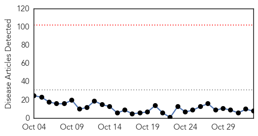
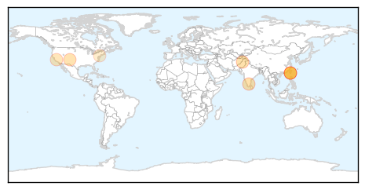

Influenza
30-Day Web Trend
1 alerts, 0 warnings

30-Day Twitter Trend
2 alerts, 0 warnings

Article Locations

Article Confidences

Top Articles:
- 1.000
- Flu vaccinations available nowHealth News
- 0.999
- Daily Checkup: Flu shots work
- 0.997
- What You Need to Know About This Year's Flu Season
- 0.992
- Why You Should Get a Flu Shot
- 0.985
- How to avoid the flu with Dr. Kevin Most
- 0.955
- Doctor gets his flu shot live on Healthwise at 5
- 0.946
- Seasonal flu vaccine to start this month
- 0.924
- Health department hosts flu clinic Nov. 5
- 0.895
- Today's stories from newspapers in Flamborough
- 0.895
- Avoid the holiday rush and get a flu shot now
- 0.696
- Social Media, Data Analytics Enable Real-Time Flu Tracking
- 0.618
- Monday's papers: Joutseno murder, pig farms, flu shot time, record highs
- 0.549
- Avian influenza concerns loom large
Top Tweets:
-
No tweets found for Nov 02, 2015
Dengue Fever
30-Day Web Trend
0 alerts, 0 warnings

30-Day Twitter Trend
2 alerts, 3 warnings

Article Locations
Article Confidences

Top Articles:
- 0.993
- Taipei City Hall sterilized following dengue case involving city employee
- 0.992
- Tainan Enterprises : Dengue fever under control in Tainan, still serious in Kaohsiung
- 0.992
- Cause for concern
- 0.992
- Dengue fever under control in Tainan, still serious in Kaohsiung
- 0.975
- Two more fall prey to dengue
- 0.914
- How data from health records, social media streams improves flu predictions
- 0.807
- Brazil Approves Use Of Genetically Modified Mosquitoes To Combat Dengue Fever Kids News Article
- 0.598
- To Prevent Malaria in Humans, Scientists Try Protecting Pigs
Top Tweets:
- 0.812
- Flavivirus news: Dengue outbreak: Number of patients reach 3500 in Rawalpindi - DunyaNews Pakis... https://t.co/J79tERigRa pathogenposse